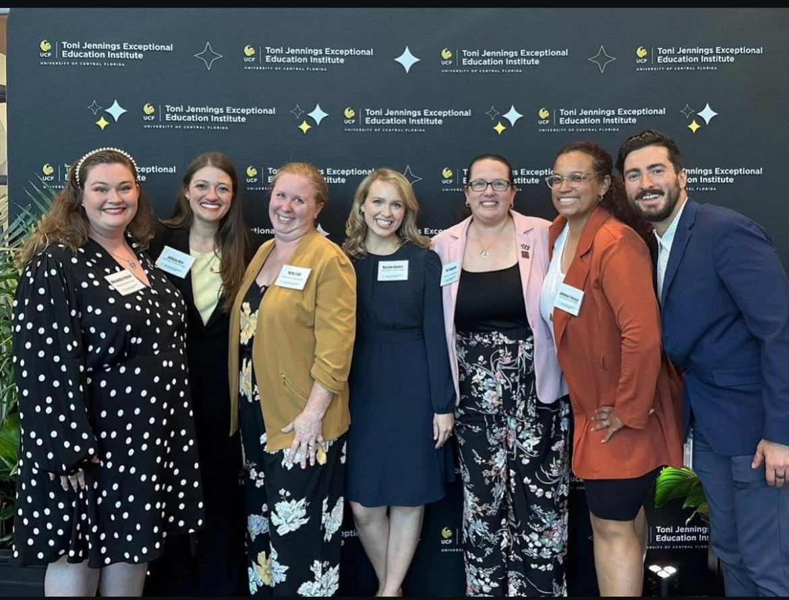
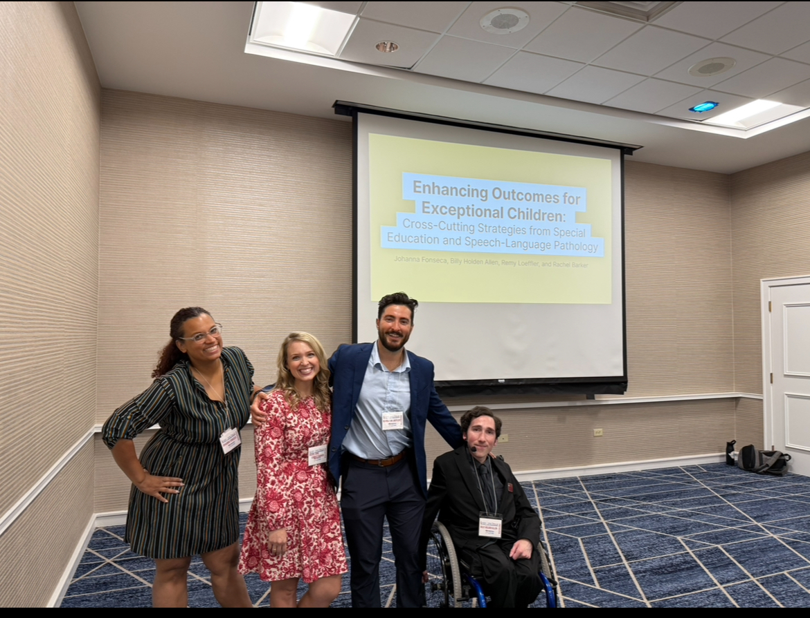
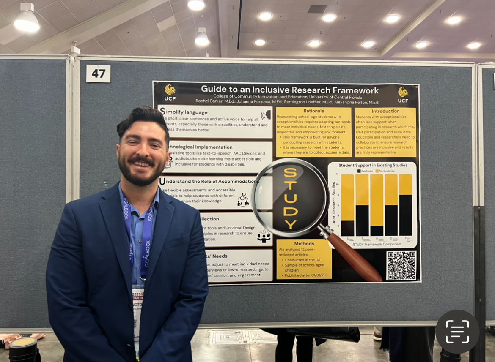

Vitae at a Glance
- Doctoral Candidate in Exceptional Student Education (Ph.D., expected 2027), University of Central Florida
- 8 years teaching in inclusive K‑12 settings; Social Studies Department Chair (UCP Bailes Community Academy)
- Research focus: preservice teacher preparation, inclusive instructional design (UDL), and behavioral interventions
- Presenter: Council for Exceptional Children (CEC); Florida CEC
- Current initiatives: Break Room behavioral regulation model; Preservice Perception Project (AI/facial‑affect analytics)
- Teacher of the Year, UCP Bailes Community Academy (2021)
College of Community Innovation and Education
University of Central Florida · Orlando, FL
Email: re269942@ucf.edu
Phone: 954‑558‑7102
Education
- Ph.D., Exceptional Student Education, University of Central Florida (Expected 2027). Emphasis: preservice preparation, inclusive supports, behavioral interventions.
- M.A., Exceptional Education, University of Central Florida (2022). Scholar, Project SPEECH.
- B.S., Exceptional Education, University of Central Florida (2018). Minor: Creative Writing; Lead Scholar.
Employment
- Inclusion Teacher, UCP Bailes Community Academy, Orlando, FL (2016 – Present)
- Lead inclusive instruction across diverse learners; mentor faculty on UDL and data‑based decision making.
- Department Chair, Social Studies (2018 – Present); IEP development and interdisciplinary collaboration.
- Designer of schoolwide behavior‑regulation supports aligned with PBIS.
- Program Coordinator – College Readiness Program, Down Syndrome Foundation, Orlando, FL (2024 – Present)
- Curriculum design for postsecondary readiness, self‑advocacy, and independent living.
- Family/community partnership building to strengthen transition outcomes.
University Teaching
- Guest Lecturer, EEX 4070: Inclusive Education, University of Central Florida (2025 – Present)
- Evidence‑based practices in inclusive pedagogy; case‑based coaching for preservice teachers.
- Teaching Assistant, EEX 6342: Seminar on Critical AI Issues in Special Education, University of Central Florida (2025 – Present)
- Ethical and pedagogical applications of AI in special education; project mentorship.
Ongoing Research & Development Initiatives
- Break Room Initiative for Behavioral Regulation and Student Wellness (PI; 2024 – Present) — UCP Bailes Community Academy
- Designing a campus “Break Room” as a proactive intervention to reduce behavioral incidents and increase self‑regulation.
- Outcome monitoring on emotional regulation, staff perceptions, and engagement; integration with PBIS.
- Preservice Perception Project: Facial‑Affect Analytics & Inclusive Teaching (Co‑I; 2025 – Present) — University of Central Florida
- Investigating preservice teachers’ affective responses to students with exceptionalities via AI‑assisted facial‑recognition signals.
- Linking emotional engagement and attitudes to confidence in inclusive practice; implications for teacher‑prep curriculum.
Research & Presentations
- Poster Presenter, Council for Exceptional Children (CEC) National Conference (2025): Guide to an Inclusive Research Framework.
- Guest Speaker, Florida Council for Exceptional Children (FCEC): Enhancing Outcomes for Exceptional Children: Cross‑Cutting Strategies from Special Education and Speech‑Language Pathology.
Professional Honors & Awards
- Teacher of the Year, UCP Bailes Community Academy (2021).
Professional Affiliations
- Council for Exceptional Children (CEC)
- Florida Council for Exceptional Children (FCEC)
- Toni Jennings Exceptional Education Institute (Affiliate)
Service & Outreach
- Program Coordinator, College Readiness Program, Down Syndrome Foundation (2024 – Present)
- Behavioral Intervention Designer, Break Room Initiative, UCP Bailes Community Academy (2024 – Present)
- Mentor for Preservice Educators, UCF CCIE (2024 – Present)
Professional Photos



© Remington Loeffler · University of Central Florida